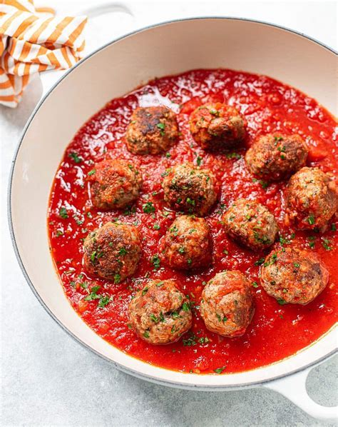

Classic Italian Meatballs
These classic Italian meatballs are tender, flavorful, and perfect for any occasion. Serve them with pasta, in a sub, or as an appetizer!
Ingredients
- 1 lb ground beef
- 1/2 cup breadcrumbs
- 1 egg
- 1/4 cup parsley
- Salt and pepper to taste
Instructions
- Mix all ingredients in a bowl.
- Form into meatballs.
- Bake at 375°F for 20 minutes.